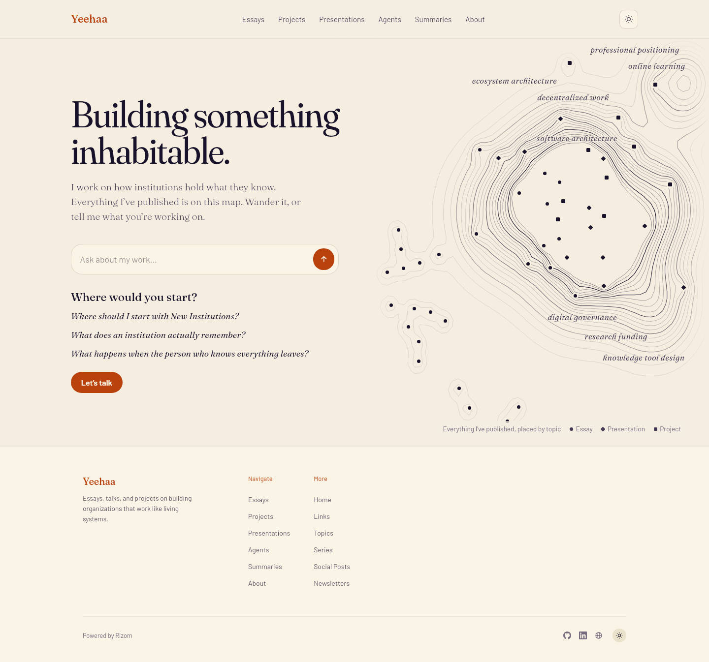
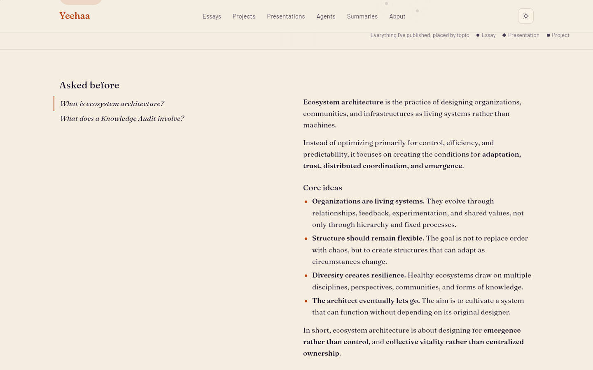
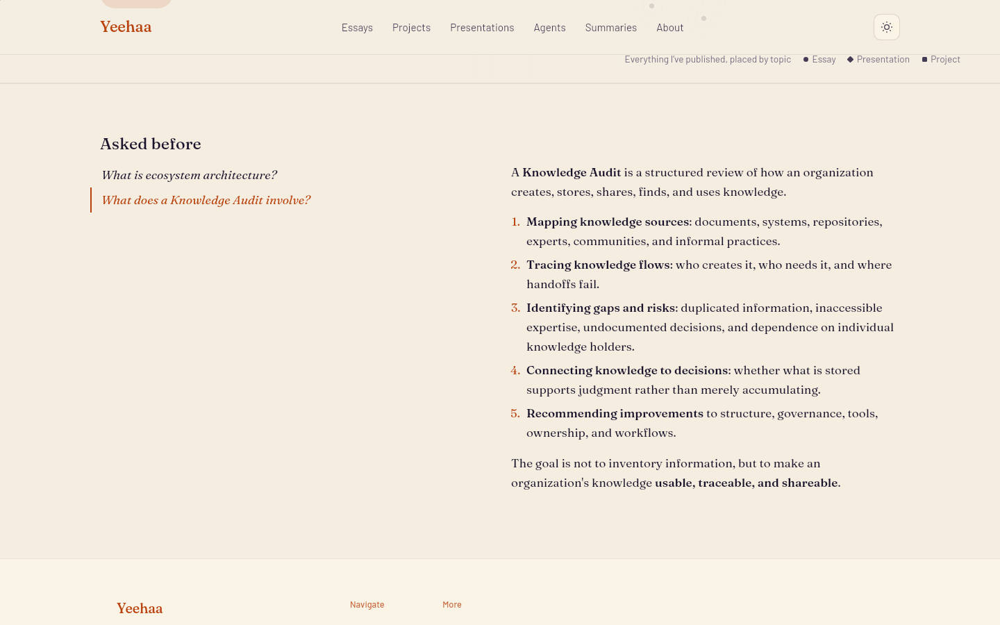
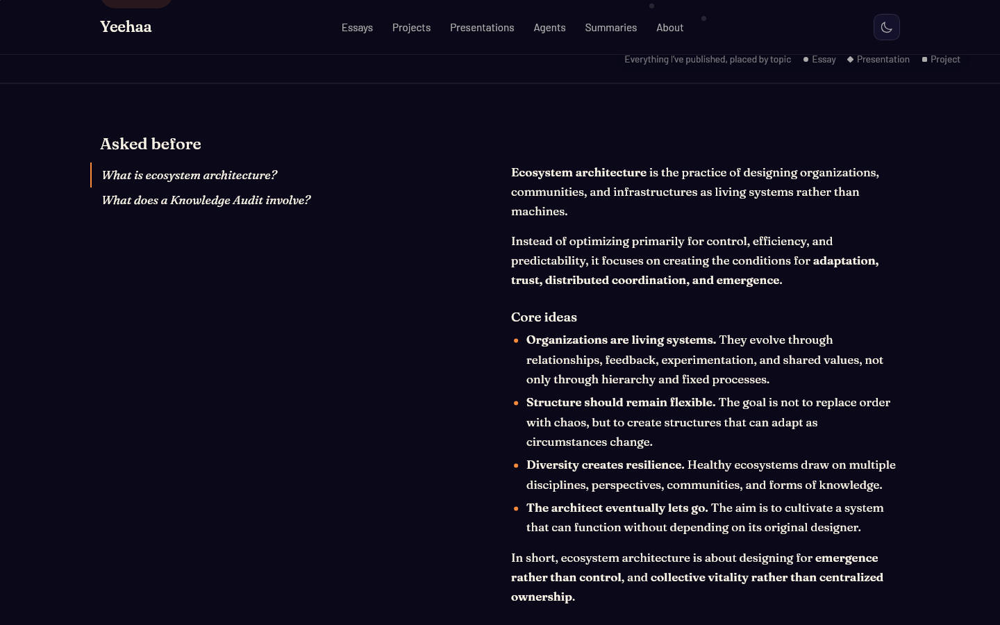
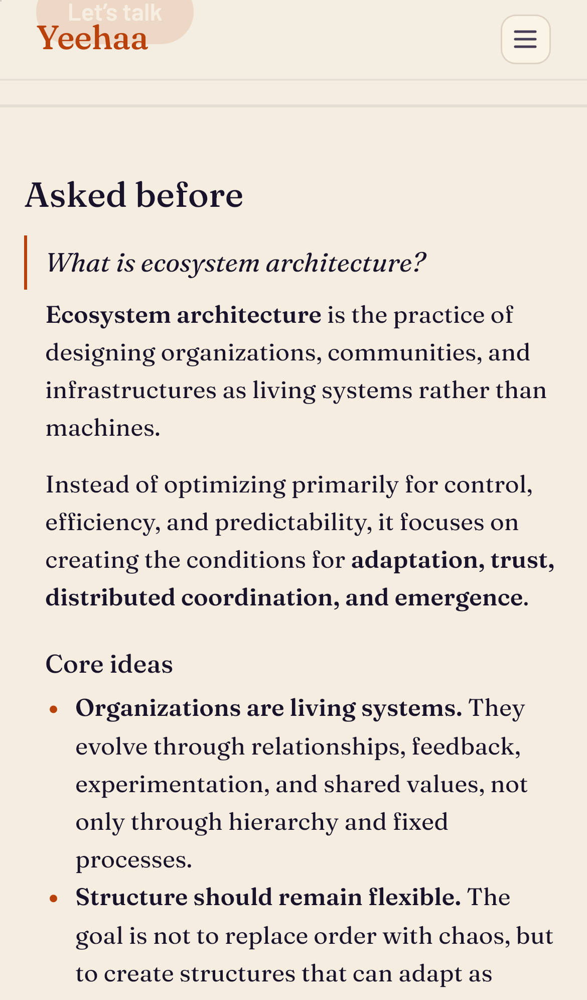
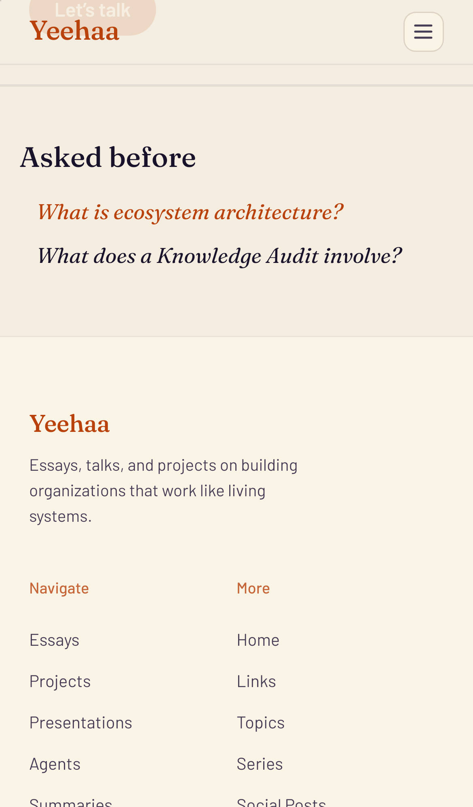

Visitors' questions are captured as draft FAQs; the owner publishes the good ones. This is where published FAQs appear: a band directly under the atlas, continuing the page's conversation. Every picture is the live preview with the proposal injected; the two answers are real captured drafts.
Desktop
Now: the atlas, then the footer

Proposed: the band under the atlas, first question open

Proposed: another question chosen

Proposed: dark

The band
Same column, same voice. The questions sit on the opening's left edge, set like the starters above them; the chosen answer reads on the right, where the map is above.
One answer at a time. The most asked question is open; choosing another swaps the answer. The question list stays in view while a long answer is read.
Most asked first, up to six questions. Only published, public FAQs; nothing renders while there are none.
The heading is authored, like every word around the conversation: an optional faqHeading on ask-content. Unwritten, the band has no heading. "Asked before" here is a placeholder.
Theme tokens only (--color-heading, --color-text, --color-accent, --color-rule, --font-heading), so both themes hold.
Phone
Proposed: first question open

Proposed: closed

On a phone
The questions stack; the open one shows its answer beneath it, and tapping it again closes it.
Same sizes as the starters and the opening: nothing grows on a phone.
Where it is built
In the professional site, so every professional brain with the FAQ plugin gets it: its homepage route places the FAQ section after the atlas.
The FAQ section renders this band instead of its plain disclosures, with the open state on the server and a few lines of script to switch answers.